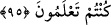

tadarsınız. Çünkü kim bey‘atı bozar ve gerisin geriye dönerse, o kişinin bu kötü
davranışı başkası için de kötü bir örnek olmuş olur.
“Sizin için” âhirette de “büyük” şiddetli “bir azap vardır.”
95. Allah’ın ahdini az bir karşılığa değişmeyin! Şâyet anlayan kimseler iseniz,
şüphesiz Allah katında olan (sevap) sizin için daha hayırlıdır.
“Allah’ın ahdini az bir karşılığa değişmeyin!” yâni Allah Teâlâ’nın ahdi ve
Rasûlü’nün bey‘atı karşılığında az bir bedel alarak onları değiştirmeyin. Bu az bedel
Kureyş müşriklerinin müslümanların zayıf olanlarına dinlerinden dönmeleri karşılığında
vermeyi şart koştukları dünya malıdır.
“Şâyet anlayan kimseler iseniz,” ilim ehlinden ve iyiyi kötüden ayırt edebilen
kimselerdenseniz “şüphesiz Allah katında olan” Allah’ın sizin için hazırladıklarından
dünyadaki zafer ve ganîmetler, âhiretteki sevap “sizin için daha hayırlıdır.”
[194]. Deylemî, Hadis no: 2807; Münâvi, III, 410
[195]. Müslim, Eyman, 12
[196]. Buhâri, Cihad, 46; Libas, 101; Müslim, İman, 48
[197]. Deylemî, Hadis no: 8064